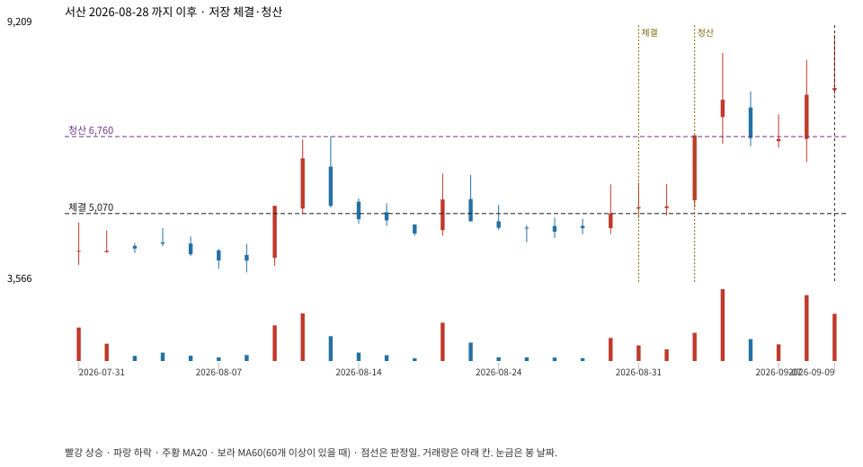

계좌를 다시 돌리지 않았다. 아래는 저장된 주문·체결·청산·비용·손익이다.

{
"case_id": "54f8734576ae700d",
"status": "closed",
"trade": {
"symbol": "079650.KQ",
"signal_date": "2026-08-28",
"quantity": 1378,
"entry": 5070,
"stop": 4277,
"target": 6760,
"planned_risk": 1108578.0721469996,
"reserved_cash": 6993446.459999999,
"fill": {
"date": "2026-08-31",
"price": 5070,
"fee": 6986.46
},
"exit": {
"date": "2026-09-02",
"price": 6760,
"reason": "target",
"net_pnl": 2312518.2600000016,
"ambiguous_bar": false
}
},
"cost": "research fee 10bp each side, slippage 5bp; amounts below are the stored ledger, not a new run",
"chart": "c\/54f8734576ae700d.svg"
}